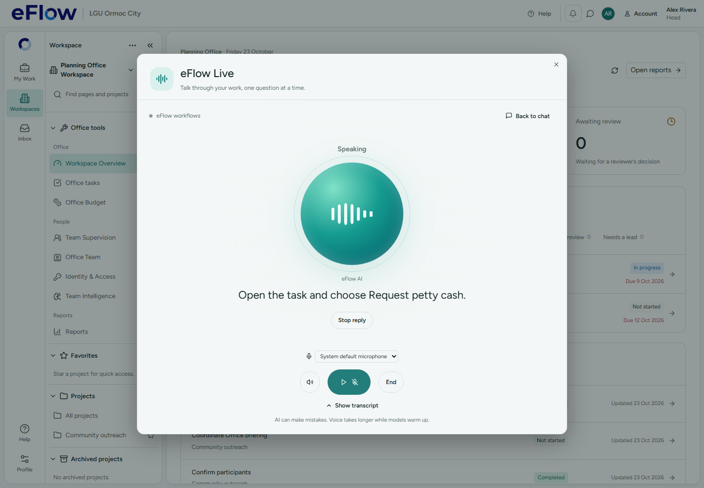

eFlow Live — Pause and latency
Full report and remaining limits · Actual model timings · Earlier desktop gallery
Desktop browser fixture with synthetic capture and controlled audio playback. This screenshot proves the Pause/input state and UI flow; actual inference timings are in the separate receipt.
Microphone paused while the accepted reply continues; first audio starts before the final part is delivered.